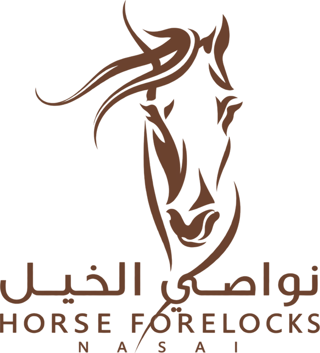
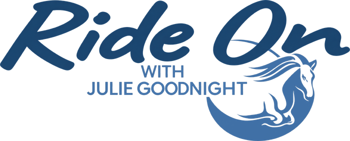
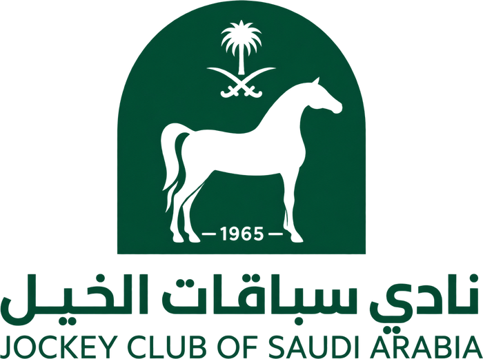

 The horse guru ★★★★★ قناة تعليمية تقدم نصائح حول ركوب الخيل والتدريب والعناية بالخيول. زيارة القناة ↗
Stable life ★★★★★ محتوى عن الحياة اليومية في الإسطبلات والعناية بالخيول والتعامل معها. زيارة القناة ↗
 Equestrian world ★★★★☆ محتوى عن عالم الفروسية وبطولات الخيل ومهارات الفرسان. زيارة القناة ↗
 Ride with confidence ★★★★☆ نصائح لتطوير مهارات ركوب الخيل وتحسين الثقة أثناء التدريب. زيارة القناة ↗